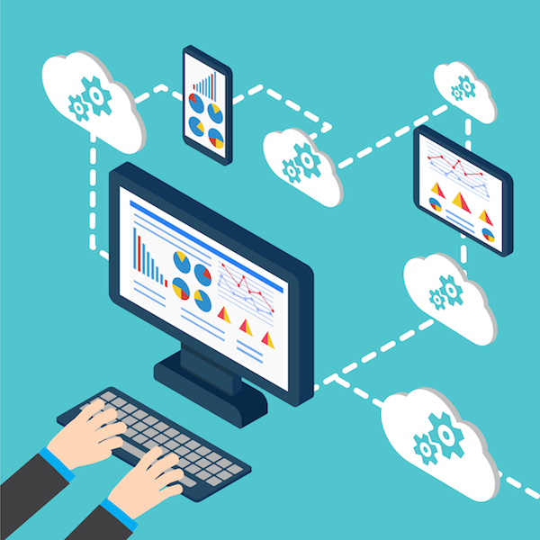

Factores de riesgo
A continuación se pone a consideración lo que podría suceder si la seguridad de los datos no está completamente garantizada por el proveedor SaaS.

El requisito fundamental es que el proveedor de SaaS mantenga múltiples usuarios sin que unos vean los datos de otros, en caso de que la seguridad se vea comprometida por el ataque malintencionado de un individuo, como una inyección SQL, la cual es una de las vulnerabilidades de las aplicaciones que emplean los servicios de bases de datos, considerada como la más grave y peligrosa, ya que las aplicaciones aceptan las entradas del usuario y las utilizan para formar las sentencias SQL en tiempo de ejecución. Durante un ataque de inyección SQL, un atacante podría proporcionar segmentos de consulta SQL maliciosos como entrada del usuario, que podría dar lugar a una petición de base de datos diferente, un ataque de inyección SQL exitoso interfiere en la confidencialidad, integridad y disponibilidad de la información en la base de datos. Con la finalidad de asegurar los datos y que estos tengan una alta disponibilidad, redundancia y copia de seguridad, el proveedor de servicios se ve en la necesidad de duplicar los datos y transferirlos a otros países. Tiene un alto grado de riesgo que la información sensible sea filtrada a partes inesperadas. En algunos países, la ley establece que cierto tipo de datos sensibles no se les permite cruzar la frontera, y el gobierno tiene el derecho de invocar el sistema de registro para comprobar la entrada y salida de tráfico, esto es considerado como una gran amenaza a la confidencialidad de los datos de los usuarios.
Del mismo modo, cuando los usuarios toman la decisión de ya no emplear SaaS, se supone que los datos de los usuarios deben ser completamente destruidos y no pueden ser recuperados por ningún medio. No obstante, el medio ambiente SaaS complica este panorama porque como se mencionó anteriormente, los datos de los usuarios podrían ser replicados en varias partes del mundo, afirmando que se hace esto para mantener la disponibilidad, redundancia o la copia de seguridad. No hay garantía de que todos los archivos sean eliminados, se puede encontrar múltiples copias de datos por el almacenamiento en múltiples ubicaciones.
Puede suceder que algunos discos de copia de seguridad o de otros medios de comunicación se dejan olvidados en algún lugar que no están conectados con el medio ambiente de SaaS, por lo que se podría deducir que los métodos tradicionales tales como la destrucción física resulta ser obsoleta en la plataforma SaaS.
Para protegerse contra la pérdida ocasional de datos, el proveedor de SaaS adopta cifrado de datos siendo considerada como una buena solución a este problema, este método se refiere a los cálculos matemáticos y algoritmo que convierte el texto sin formato a texto cifrado, que no pueda ser leída por usuarios no autorizados, este es utilizado con el fin de mejorar la confidencialidad de los datos alojados en la base de datos. Sin embargo, las técnicas de cifrado tienen su propio conjunto de desafíos, incluyendo la gestión de claves, el uso correcto de los algoritmos de criptografía y las bibliotecas.
Por lo general, el control de acceso de base de datos está establecido por los administradores autorizados a través de la consola del sistema de gestión de base de datos segura o interfaz.
Algunos proveedores de SaaS están en la capacidad de incorporar políticas específicas de seguridad en sus ajustes de control, realizan esto con la finalidad de que la empresa cliente sienta que sus datos están seguros permitiéndoles a las empresas adherir a la aplicación SaaS sus propias políticas de acceso, por lo que el proveedor se ve libre de toda responsabilidad, ya que el cliente tendrá esta competencia a su cargo, sin embargo se debe considerar que los usuarios no tienen las instalaciones al nivel de seguridad de SaaS, por lo que es una vulnerabilidad que puede ser aprovechada por los atacantes.
Las aplicaciones implementadas en el entorno SaaS complican el mantenimiento de la integridad de los datos, es fundamental que los proveedores de SaaS implementen mecanismos para asegurar la integridad de los datos y la capacidad de decir lo que le pasó a un determinado conjunto de datos y en qué momento.
El proveedor de servicios debe asegurar que los datos se transmiten en un sistema seguro y que los datos son reales, el sistema de transacción de datos debe seguir ACID (atomicidad, coherencia, aislamiento y durabilidad) son propiedades para asegurar la integridad de los datos. La mayor parte de la base de datos utiliza las propiedades ACID para asegurar la transacción de datos y mantener la integridad de los mismos.

Durante el procedimiento de transmisión, los datos de comunicación de las partes siempre incluye la parte remitente y la parte de recepción, por lo que la identidad de verificación entre ellos se convierte en esencial y deben asegurar que los datos transferidos no han sido modificados por un tercero.
Los riesgos de seguridad para los datos en tránsito han aumentado debido al espionaje, se lleva a cabo con sigilo esta tarea y es difícil de detectar que la red ha sido víctima de espionaje por los piratas informáticos. Los atacantes pueden hacer uso de espionaje para interceptar la sesión TCP, luego los atacantes pueden buscar el número de secuencia de las comunicaciones en curso y forjar un segmento falso con una carga maliciosa o hacerse pasar como la dirección IP del remitente para hacer el acto aún más malicioso.